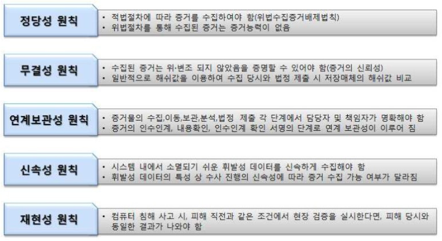
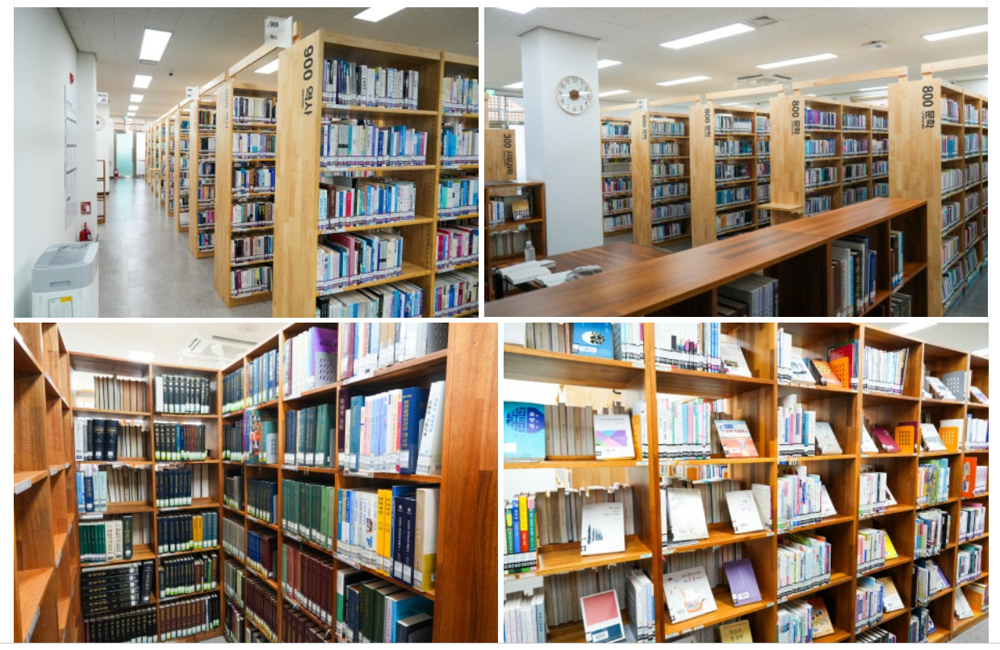
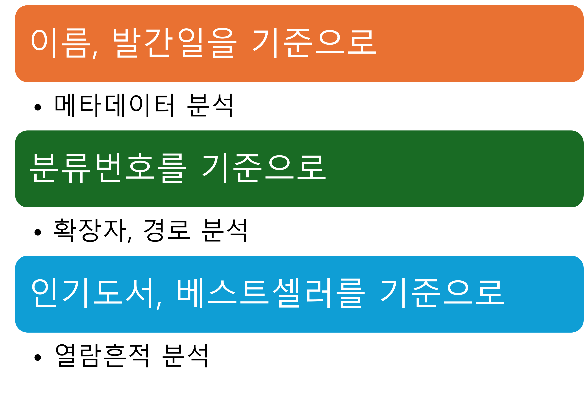
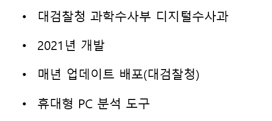
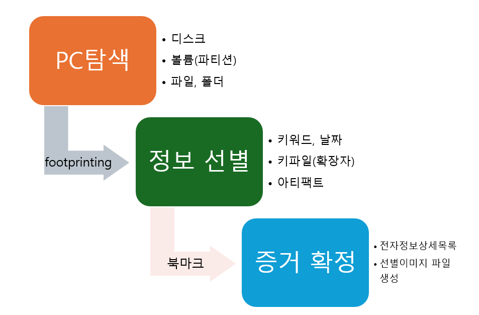

- 인위적으로 생성된 물건
- 과학적, 기술적 결과물 및 부산물
| 항목 | 예시 |
|---|---|
| 메타 데이터 | 파일이름, 생성일자, 저장경로 등 |
| 열람 흔적 | 링크파일, 검색어, 프리패치 등 |
| 데이터베이스 | 이벤트 로그, 레지스트리 등 |
현장 PC 수사의 기초



| 항목 | 예시 |
|---|---|
| 메타 데이터 | 파일이름, 생성일자, 저장경로 등 |
| 열람 흔적 | 링크파일, 검색어, 프리패치 등 |
| 데이터베이스 | 이벤트 로그, 레지스트리 등 |


현장 PC 수사는 DFT부터
무엇이 어렵나요?
수업이 마음에 들지 않습니다.
질문을 환영합니다 · Q&A